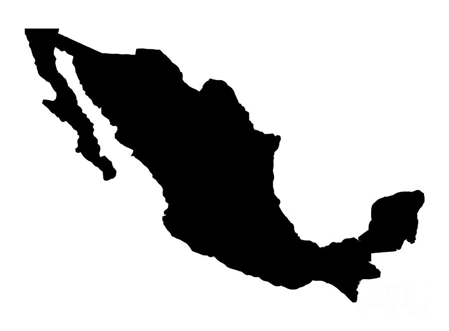
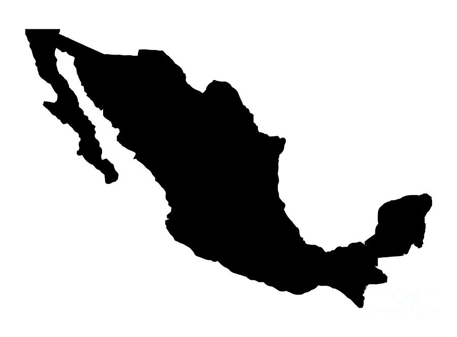

Corn, or maize, was first domesticated by indigenous peoples in southern Mexico about 10,000 years ago, playing a central role in Native American agriculture.
Yellow bell peppers, like other bell peppers, originated in Central and South America, where they have been cultivated for thousands of years. The yellow variety, which is a fully matured form of the green bell pepper, is known for its sweet, almost fruity flavor and vibrant color. These peppers became globally popular after the Columbian Exchange, adding color and flavor to cuisines around the world.
Yellow beets, also known as golden beets, are a variety of beetroot with a mild, sweet flavor and a vibrant yellow hue. They are believed to have originated in the Mediterranean region, where beets have been cultivated since ancient times for their edible roots and leaves. Over time, selective breeding led to the development of different varieties, including the yellow beet, prized for its unique color and sweeter taste compared to the more common red beet.

Rutabaga, a root vegetable, was first cultivated in Scandinavia and Russia as a hardy, nutritious food source.


Ginger, originating in Southeast Asia, has been cultivated for its medicinal and culinary properties for millennia.
Native to Southeast Asia and Papua New Guinea, bananas are believed to be one of the first fruits cultivated by humans, dating back to at least 5000 BCE.